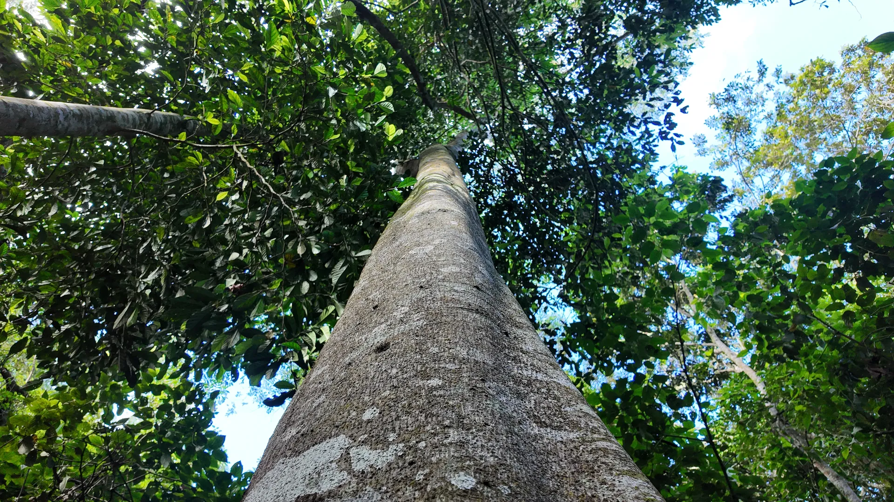
Parar a tiempo
también es producir
Descanso. El único principio que se aplica no haciendo nada, y el más difícil de todos.
Seis principios dicen
qué hacer. Este dice
cuándo no hacer nada.
Y tiene una aplicación concreta que vamos a medir hoy en el potrero: el Pastoreo Racional Voisin.
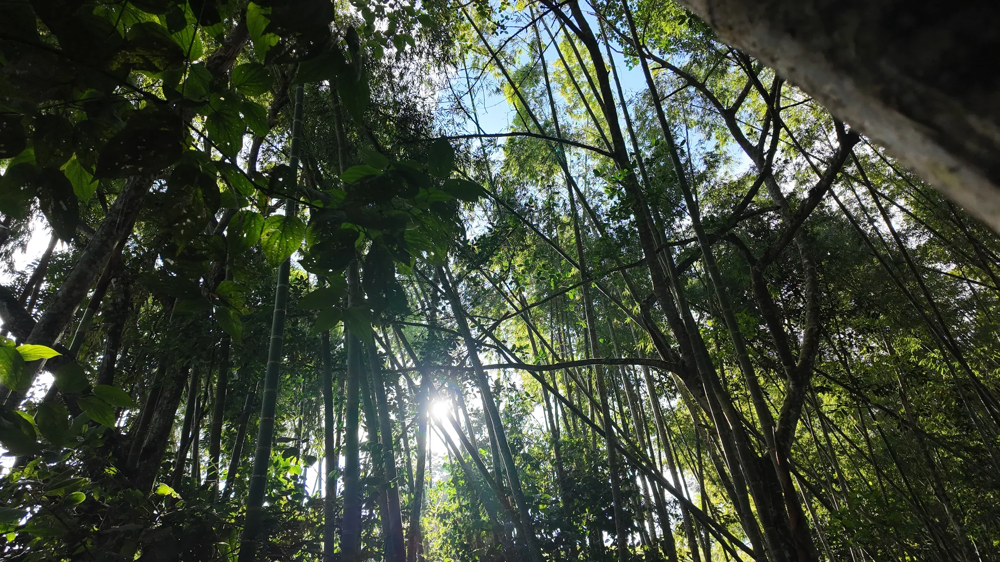
El bosque no produce
todos los días.
Produce todos los años.
Ningún sistema vivo trabaja a plena carga sin parar. El bosque alterna, descansa, acumula y después explota. Nosotros aprendimos a exigirle a la tierra una producción constante, y por eso tenemos que comprarle fertilidad todos los meses.
El descanso
como fertilidad
Qué pasa debajo del suelo mientras arriba parece que no pasa nada.
«Hay que producir
sin parar»
Es la frase que gobierna la finca convencional: tierra ocupada todo el año, potrero con animales todo el tiempo, lote que nunca se queda quieto porque quieto no renta.
El resultado lo conocemos: rendimientos que bajan, insumos que suben y un suelo que cada año exige más para dar lo mismo.
Una planta cortada
vive de sus reservas
- Al perder la hoja, la planta deja de fotosintetizar y tira de lo que tiene guardado en la raíz.
- Mientras rebrota, la raíz se achica. Esa es la parte que nadie ve y la que define todo.
- Si se vuelve a cortar antes de que reponga, arranca la siguiente ronda con menos reserva que la anterior.
- Repetido muchas veces, el sistema radicular se vuelve superficial: menos agua, menos nutrientes, menos carbono.
No se degrada el potrero por falta de fertilizante. Se degrada por falta de tiempo.
La curva sigmoide de Voisin
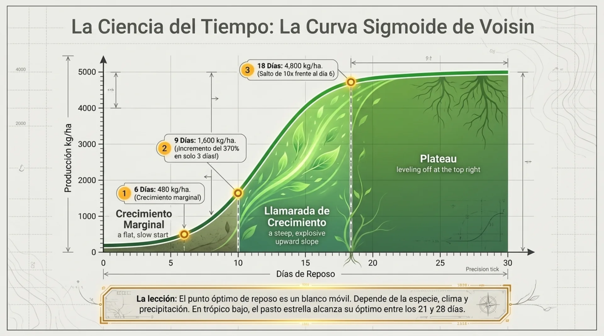
Doce días de paciencia
valen diez veces más
Esa aceleración tiene nombre: la llamarada de crecimiento. Entrar con los animales antes de que ocurra es regalar el 90 % de la cosecha.
Parar no es dejar de producir.
Es producir hacia abajo.
- La raíz se profundiza y alcanza agua y minerales que antes no tocaba.
- Los exudados vuelven a alimentar la microbiota: la red trófica se reactiva.
- El suelo se cubre, baja la temperatura y la macrofauna vuelve a trabajar.
- Se acumula carbono, que es agua retenida, que es resistencia a la próxima sequía.
Los cinco principios anteriores se construyen en el tiempo de descanso. Sin él, ninguno alcanza a expresarse.
Tres descansos que casi
nadie programa
Una cama que vuelve a sembrarse el mismo día nunca se repone. Entre ciclo y ciclo va cobertura, leguminosa o abono verde, no suelo desnudo esperando.
Veinticinco días en lluvia, treinta y cinco en sequía. Pero el número real no sale del calendario: sale de mirar el rebrote.
Una finca diseñada para que tú no pares nunca está mal diseñada. El agotamiento del productor es la causa más común de abandono de un proyecto agroecológico.
No manejas plantas
ni animales.
Manejas tiempo.
Todas las decisiones de este curso son decisiones de tiempo: cada cuánto siembras, cada cuánto riegas, cada cuánto entras al potrero, cada cuánto aplicas. El agrónomo convencional ajusta dosis. El regenerativo ajusta ritmos.
Y el tiempo no se compra en ningún almacén agropecuario.
La aplicación directa:
Pastoreo Racional Voisin
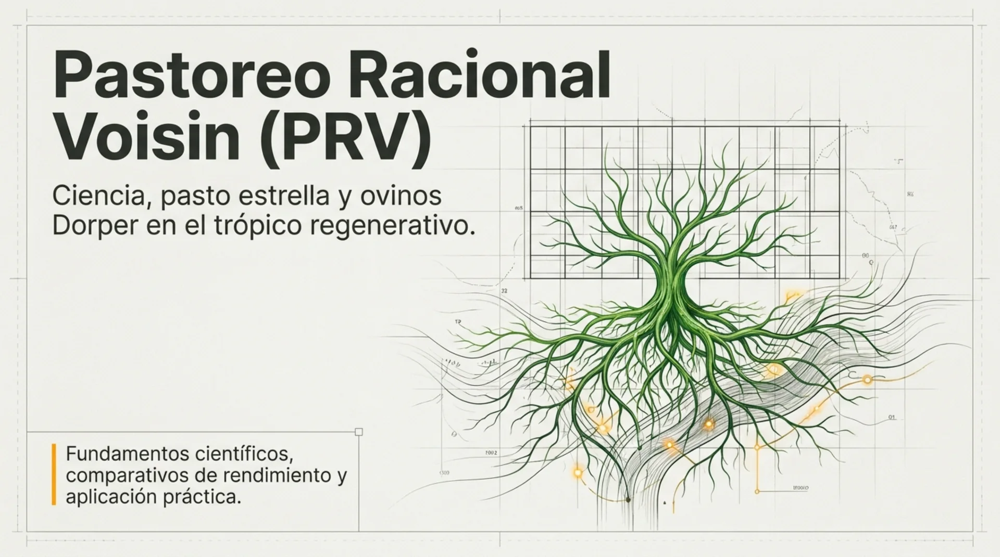
Rotar potreros no es PRV
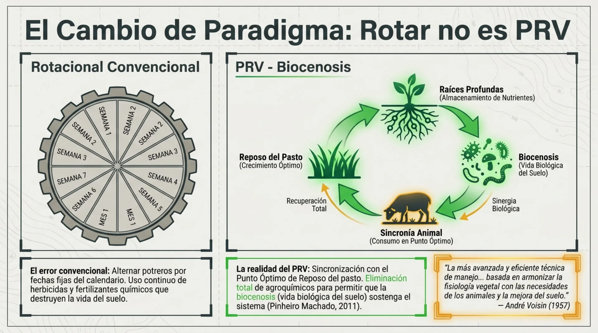
¿En cuál columna está
tu finca hoy?
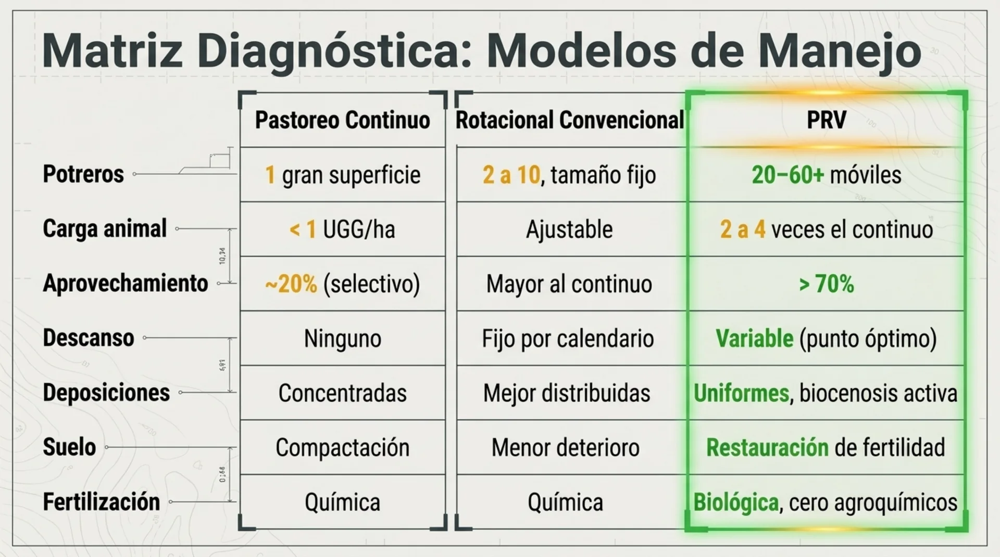
Las cuatro leyes universales
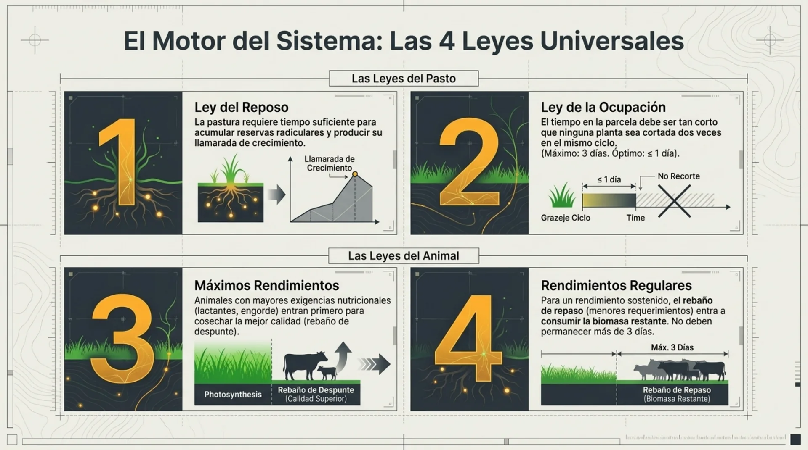
Dos leyes para el pasto,
dos para el animal
- Reposo: el pasto necesita tiempo suficiente para reponer raíz antes de volver a ser cortado.
- Ocupación: tan corta que ninguna planta alcance a ser mordida dos veces. Máximo 3 días, ideal 1.
- Máximos rendimientos: los animales que más exigen entran primero, al mejor pasto.
- Rendimientos regulares: los de menor exigencia repasan después, y tampoco se quedan más de 3 días.
Las dos primeras las decide el pasto. Las dos últimas las decides tú.
La regla de oro: 21 a 28 días
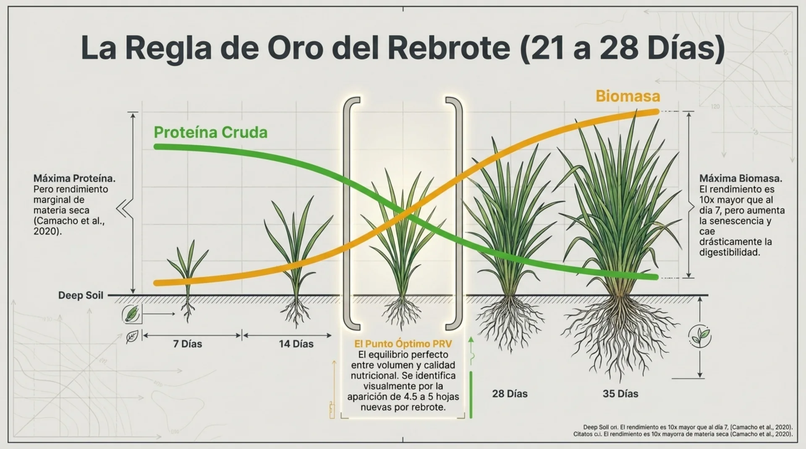
No cuentes días.
Cuenta hojas.
El punto óptimo es un blanco móvil: cambia con la especie, el clima y la lluvia de ese mes. Por eso el calendario fijo siempre falla, y por eso el PRV no se puede programar en Excel desde la casa.
Pasto estrella africana
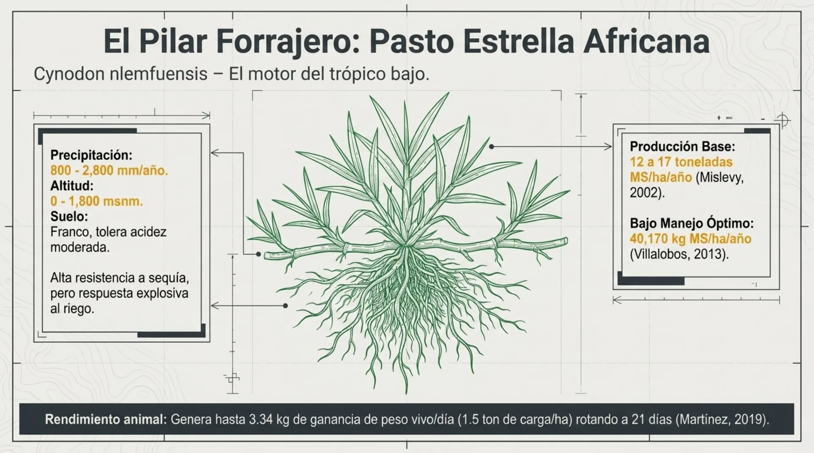
Tres pastos, casi la misma
biomasa por ciclo
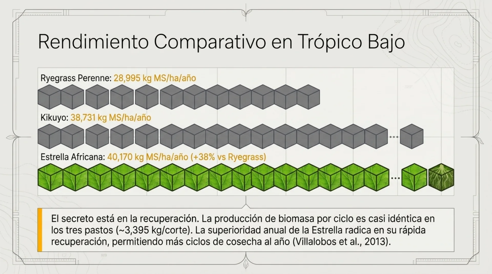
Cómo se hace un aforo
Acá son 38 animales y 1.600 kg de hato: 160 kg de comida al día. Esa resta te dice cuántos animales puedes sostener de verdad.
Ovinos Dorper bajo PRV
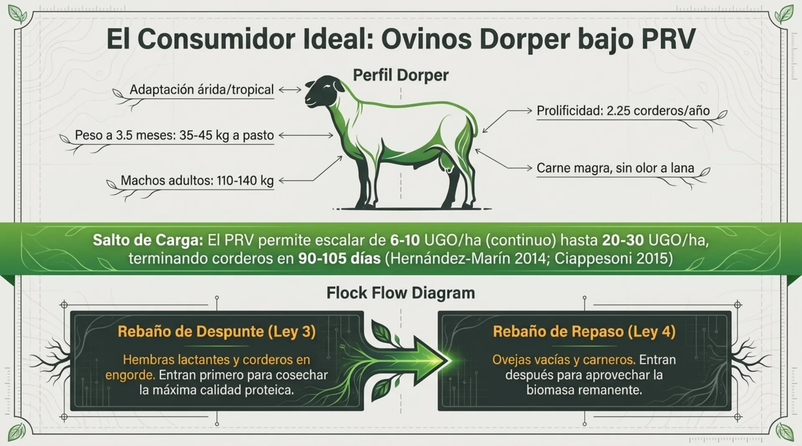
En Colombia la prolificidad
es otra
Esto no invalida la ficha técnica: la calibra. Tus registros de tu finca siempre le ganan a cualquier número publicado, incluidos los nuestros.
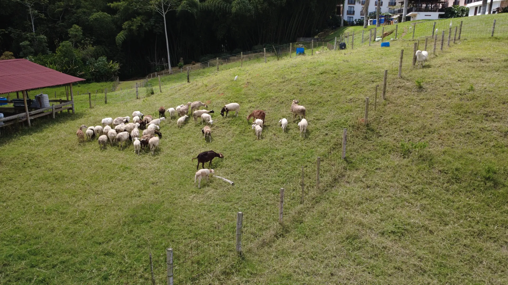
Dos rebaños, un mismo potrero
Hembras lactantes y corderos en engorde. Cosechan la punta, que es la parte de mayor proteína y digestibilidad. Son los que necesitan convertir.
Ovejas vacías y carneros. Aprovechan la biomasa restante, que para ellos alcanza de sobra. Y tampoco se quedan más de tres días.
Con la misma área y el mismo pasto, separar los dos rebaños sube la ganancia de peso donde importa y no desperdicia nada.
Más allá de la carne
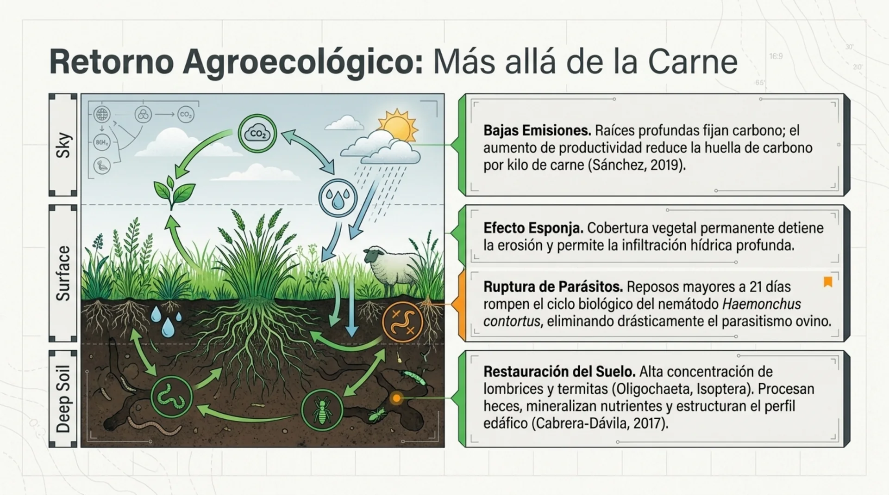
de reposo rompen el ciclo biológico de Haemonchus contortus, el principal nematodo del ovino en el trópico. El potrero vacío hace el trabajo que hace el antiparasitario.
Acá el manejo sanitario se reduce a Promocalier, que es vitamínico, y Panacur oral cuando hace falta. Ninguno de los dos es antibiótico, así que no matan la flora intestinal ni la del estiércol.
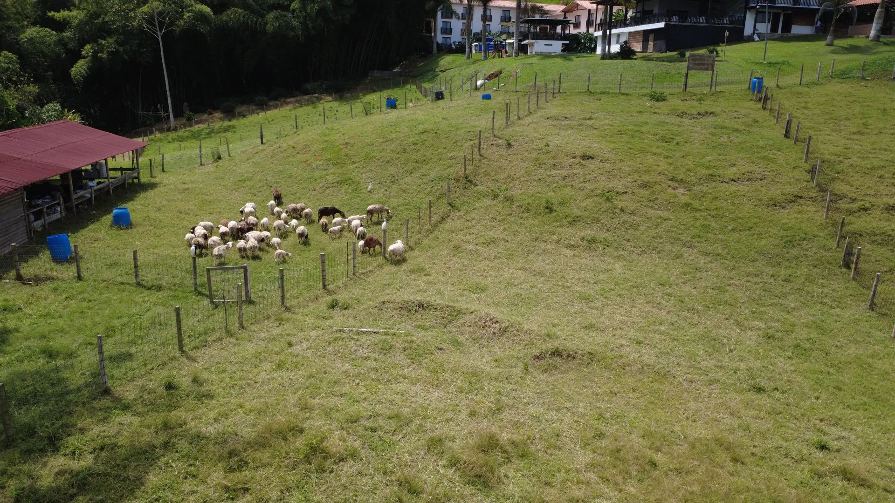
El módulo ovino
de La Huerta
La cerca electrosoldada es más cara que la eléctrica portátil, pero es la que permite tener huéspedes caminando al lado. En una finca sin visitantes, el impulsador y la cinta son mucho más baratos.
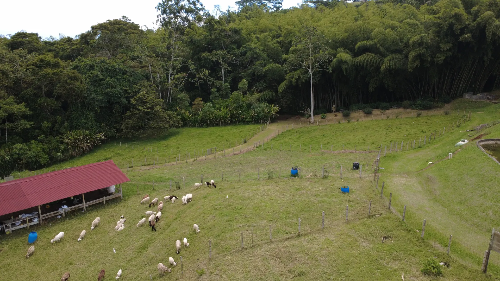
Vamos a medir
- Contamos hojas nuevas por estolón en dos potreros con distinto tiempo de descanso.
- Cortamos y pesamos un metro cuadrado en cada uno.
- Calculamos cuántos días aguanta cada potrero con el hato que hay hoy.
- Y decidimos, entre todos, en cuál entraría el rebaño mañana.
Cerrar el círculo
De la teoría a tu finca, y de los siete principios a un solo sistema.
Subdividir, diagnosticar
y empezar
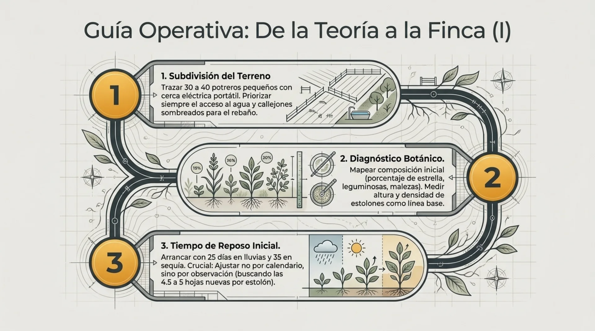
Calibrar la carga
y registrar
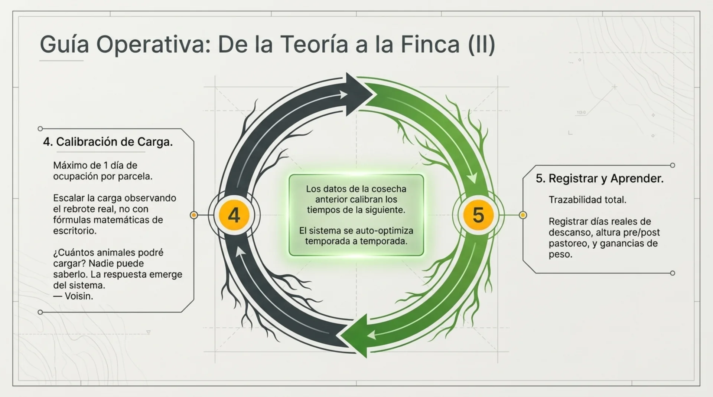
El pasto no es un insumo:
es el sistema
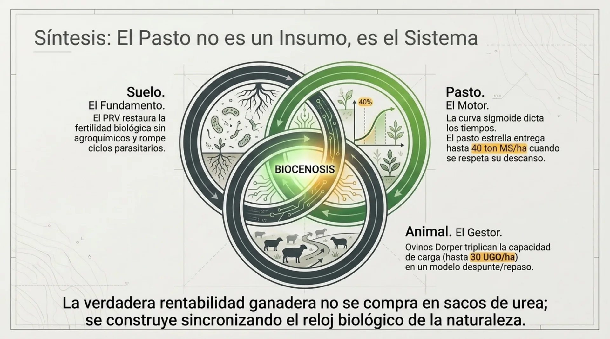
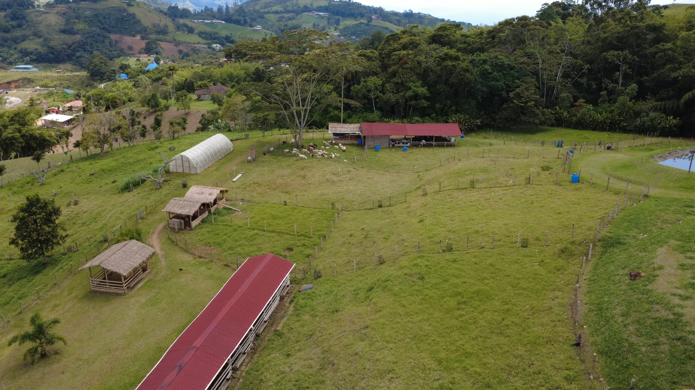
El potrero es el curso
entero, en 500 m²
Cobertura permanente, sombra en los callejones y raíz profunda que infiltra en vez de escurrir.
Deposiciones uniformes, lombrices y termitas procesando, fertilidad biológica sin un gramo de química.
Las malezas aportan nutrientes distintos, y el animal convierte en proteína la biomasa que nadie más iba a comer.
El que los articula a todos. Sin reposo, ninguno de los otros seis alcanza a expresarse.
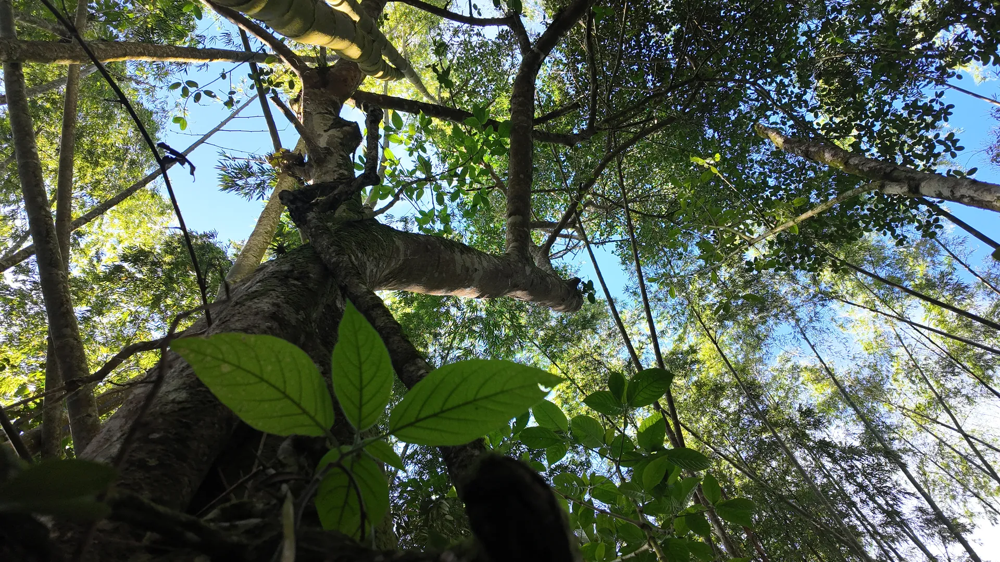
Empezamos mirando
el bosque. Terminamos
imitándolo.
Genera su clima, se inocula solo, recicla lo que produce, es diverso, infiltra el agua, hace circular la energía y descansa. Nada que una finca no pueda hacer: solo lo hace con más paciencia.
Cinco decisiones de descanso
para cualquier finca
- Ningún lote ni potrero vuelve a producir antes de haber repuesto raíz.
- El tiempo de reposo se decide mirando el rebrote, nunca el calendario.
- Ocupación corta: que ninguna planta sea mordida dos veces en el mismo ciclo.
- Registrar días reales de descanso y altura antes y después. La cosecha anterior calibra la siguiente.
- Programar también tu propio descanso. Una finca que depende de que nunca pares no es sostenible.
Cuatro cosas, con
lo que ya tienes
- Sales al potrero y cuentas hojas nuevas por estolón. Anotas el número y la fecha.
- Cortas y pesas un metro cuadrado. Ya tienes tu primer aforo.
- Subdivides, aunque sea con cinta eléctrica, el potrero más grande en cuatro.
- Abres un cuaderno de potreros: entrada, salida y días reales de descanso.
Con ese cuaderno, en seis meses sabes más de tu finca que cualquier asesor.
Ya están los siete.
Falta decir por dónde empezar.
Después del almuerzo armamos los siete principios en el diseño de una finca productiva y les entregamos la ruta de 90 días. Y a las 2:30, certificados y foto.